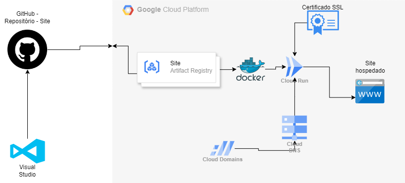
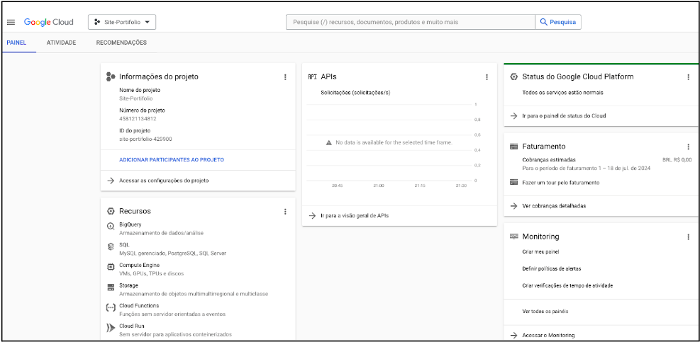

Projeto Hospedando um site estático no GCP

Hospedando um site estático no GCP com Domínio + Certificado https
Por boas práticas o recomendável é criar um novo projeto para o site.
Crie um nome para seu novo projeto e selecione ele para uso, no exemplo vamos usar "Site-Portifolio"
Com o projeto criado, agora vamos criar a zona DNS, basta digitar "dns" na pesquisa superior e clicar em Cloud DNS.